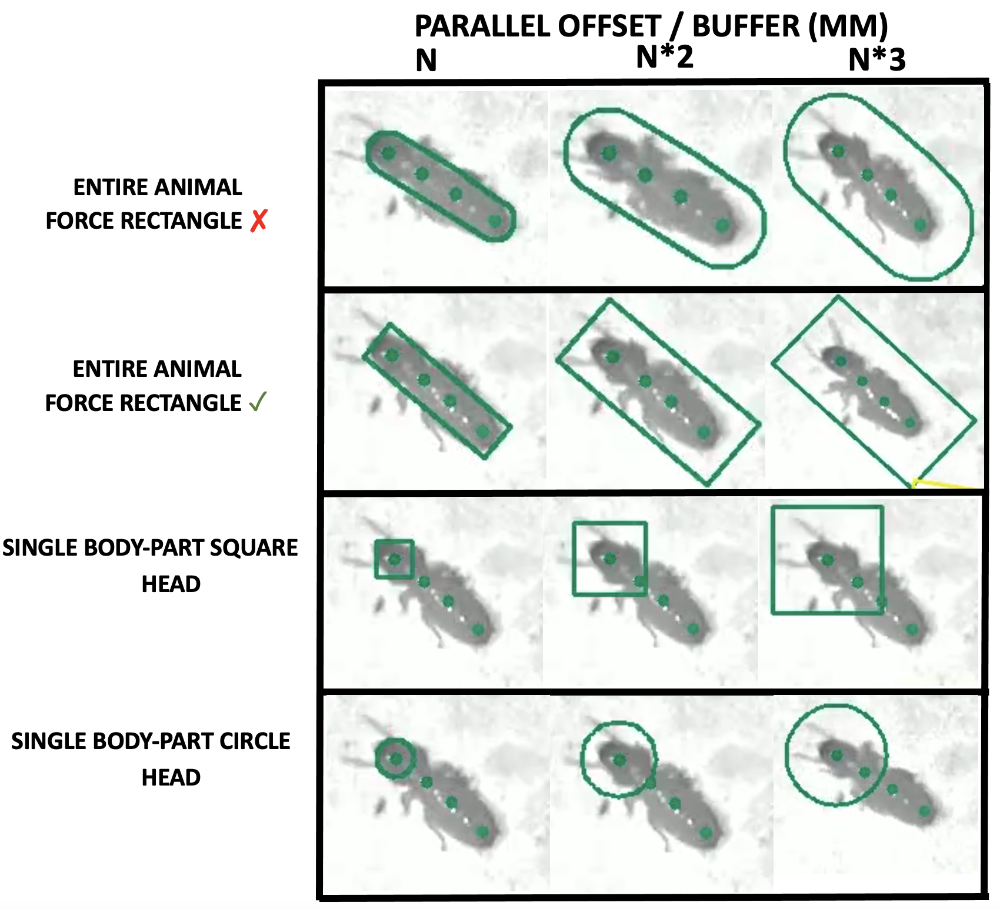
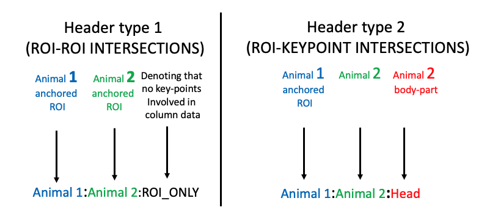

Animal-anchored ROIs (bounding-boxes) in SimBA
The animal-anchored region-of-interest (ROI) interface allows users to define bounding boxes (or circles) around one or more pose-estimated animal key-points. Once defined, the bounding boxes can be used to calulate how often and when different bounding boxes and key-points intersect which each other to get proxy measurement for how different animals interact with each other. These measurements can also be used as features for any downstream machine learning algorithm.
The code can be found in simba.bounding_box_tools.
BEFORE ANALYZING ANIMAL-ANCHORED ROIs in SIMBA
To analyze anchored-roi data in SimBA (for descriptive statistics,
machine learning features, or both descriptive statistics and machine
learning features), the pose-estimated tracking data first has to be
processed up-to and including the Outlier correction step described
in Part 2 - Step 4 - Correcting
outliers.
Thus, before proceeding to calculate animal-anchored ROI based metrics,
you should have one file for each of the videos in your project located
within the project_folder\csv\outlier_corrected_movement_location
sub-directory of your SimBA project.
Specifically, for working with anchored-ROIs in SimBA, begin by (i) Importing your videos to your project, (ii) Importing the tracking data and relevant videos to your project, (iii) Setting the video parameters, and lastly (iv) Correctting outliers (or click to indicate that you want to Skip outlier correction as detailed in the Correct outliers tutorial)
Animal anchored ROIs in SimBA (animal bounding boxes)
Finding animal-anchored ROIs

Before analyzing animal-anchored ROI data in SimBA, we need to define
the shape of - and find - the bounding boxes that define each animal in
each frame of your videos. To do this, click on the right-most [Add-ons]
tab after loading your SimBA project. Next, click on the
Animal-anchored ROI analysis button to launch a pop-up giving access
to the animal-anchored ROI methods. Begin by clickin on the
Find animal boundaries button in the SIMBA ANCHORED ROI pop-up
window displayed in the screengrab above.
This brings up a further pop-up window named FIND ANIMAL BOUNDARIES
with a single drop-down menu named SELECT SHAPE TYPE. The dropdown
menu has three options, (i) Entire animal, (ii) Single body-part
square, and (iii) Single body-part circle. More information on each
option follows below, but in brief:
When choosing Entire animal, all of the animal body-parts will be placed inside the animal-anchored ROI.
When choosing Single body-part square, a single user-defined body-part will be placed inside a square animal-anchored ROI.
When choosing Single body-part circle, a single user-defined body-part will be placed inside a circular animal-anchored ROI.

If choosing Entire animal in the SELECT SHAPE TYPE dropdown, the
settings menu on the left in the screen-grab below will be show up.
If choosing Single body-part circle or Single body-part square
in the SELECT SHAPE TYPE dropdown, the settings menu on the
right in the screen-grab below will be show up. We will first go
through the settings for Entire animal based bounding boxes,
followed by body-part anchored bounding boxes.
Entire animal based bounding boxes
{kind=link}
CLICK HERE FOR A SIMILAR SHAPE-TYPE REFERENCE TABLE DESCRIBING EXPECTED BOUNDING BOXES OUTPUT FOR SHAPE SHIFTING ANIMALS (I.E., MICE)
{kind=link}
If selecting Entire animal based bounding boxes, then users have two
user-defined parameters:
FORCE RECTANGLE: Rather then defining each animals ROI through polygons, we can force the polygon to its minimim bounding rectangle. If you want your whole animal-anchored ROI to be rectangles, rather than a polygons, then tick the
FORCE RECTANGLEcheckbox. If you want the animals-anchored ROIs to be polygons, then leave theFORCE RECTANGLEcheckbox un-checked.
PARALLEL OFFSET: Sometimes we may not want to draw our animal-anchored ROIs exacactly by the outer-bounds of the animal hull body-part key-points. Instead, we may want to introduce a little extra wriggle room that defines the animals personal space. If you want to introduce a little extra room inside the animal-anchored ROIs, then enter the size of that space in the
PARALLEL OFFSETentry box in millimeter.
Body-part based bounding boxes.
Single body-part based bounding also has two user-defined parameters:
BODY-PARTS: As opposed to
ENTIRE ANIMALbased bounding boxes - for single body-part based bounding boxes, we need to define which body-part the ROI should be anchored to. When selecting Single body-part circle or Single body-part square in theSELECT SHAPE TYPEdropdown, you should see a row representing each animal in your SimBA project. Each row has a drop-down menu namedBODY-PART. For each animal, select the body-part you wish to anchor the animals’ ROI to.
PARALLEL OFFSET: Just as when working with Entire animal based ROIs, there is a parallel offset entry box when working with single body-part based ROIs. This entry box defines the size of the ROI from the animal body-part (see the example reference image above). As opposed to when working with Entire animal based ROIs, this entry box cannot be zero or empty when working with single body-part based ROIs.
Once you have filled in the parameters for your animal-anchored ROIs,
click the RUN button. You should be able to follow the progress in
the main SimBA main terminal window and the OS terminal.
Once complete, SimBA saves the information of all the anchored ROIs for
all the animals in all frames and videos in a pickled dictionary of
shapely shapes values with the project_folder/log directory. You
should see a file named project_folder/logs/anchored_rois.pickle. I
know - a pickled dictionary with shapely shapes will be nonsense to
many and difficult to work with. However, this file containes all the
information we need to compute all the statistics we need. The reason
for saving the data in this nonsense format as we need to compress
it as much as we possibly can, because it contains a potentially very
large about of data (depending on the number of videos, individuals, and
frame rate of your videos).
Visualizing animal-anchored ROIs
Next, when the animal anchored-ROIs have been computed and we have the
anchored_rois.pickle file, we may want to visualize the information
in this file to confirm the ROIs look as expected. To visualize the
animal-anchored ROI boundaries, click on the VISUALIZE BOUNDARIES
button which should bring up the following pop-up window allowing a few
user-defined video settings:
{kind=link}
In the
SELECT VIDEOdrop-down menu, select the video you wish to visualize the animal-anchored boundaries in.Tick the
INCLUDE KEY-POINTScheckbox if you want to visualize the body-part pose-estimated key-points in addition to the animal-anchored ROIs.Occationally, the animal-anchored ROIs (and key-points) are more visable when rest of the image is in greyscale. To create greyscale images (and colored ROIs/key-points), then tick the
GREYSCALEcheckbox.We may want to make the the intersections that SimBA finds more salient (i.e., highlight intersecting animal-anchored ROIs in in bright red) to make sure that the statistics presented are accurate. To do this, tick the
HIGHLIGHT INTERSECTIONScheckbox. NOTE: In order for this to work, you must calculate boundary statistics before visualizing the data.We may want to specify the the attributes of each ROI manually rather than SimBA automatically assigning ROI and key-point colors and sizes. To do this, tick the
ENABLE USER-DEFINED ROI ATTRIBUTESand the the table to assign different ROI attributes for different animals becomes available:ROI COLOR: The color of the animal bounding-box (and key-points).ROI THICKNESS: The thickness of the animal bounding-box. For more information on thickness, see the upper panel of THIS IMAGE.KEY-POINT SIZE: The size of the circles denoting the location of the pose-estimated body-parts.HIGHLIGHT COLOR: The color of the animal bounding-box IF it insersects with another animal bounding box or another animal body-part.HIGHLIGHT THICKNESS: The thickness of the animal bounding-box IF it insersects with another animal bounding box or another animal body-part.
{kind=link}
Next, to create the animal-anchored boundary videos, click the RUN
button. You can follow the progress in the main SimBA terminal window
and the OS terminal. Once complete, a new file representing the video
selected in the SELECT VIDEO drop-down is created in the
project_folder/frames/output/anchored_rois directory of your SimBA
project. You should expect the videos to look something like these
examples, dependning in your chosen shape-type:


Computing statistics
Next, we want to calculate statistics based on on each animal-anchored ROI. For each frame and each animal-anchored ROI, we may want to know:
Which other animal-anchored ROIs the ROI intersects with, and
Which pose-estimated key-points belonging to other animals intersects with the animal-anchored ROI
Thus, an animal-anchored ROI can intersect with (i) other animal-anchored ROIs, and (ii) other animal body-part key-points, as in the example image below.

To calculate these data, click on CALCULATE BOUNDARY STATISTICS
button which brings up the following pop-up settings window:

To calculate ROI-ROI intersection data (as in the left termite image
above), tick the ROI-ROI INTERSECTIONS checkbox. To calculate
ROI-keypoints intersection data (as in the right termite image above),
then tick the ROI-KEYPOINT INTERSECTIONS checkbox.
Next, we want to choose the output file-format on how to store our data.
If your data is relatively small (e.g., <100k-ish frames per video, <5
animals per video, <15 ish videos, and you have a good amount of storage
space), consider ticking the .csv radio-button in the
OUTPUT FILE TYPE sub-menu. This is the easiest file-type to work
with for many of us (You can open and play with these it in any
spreadsheet-viewer) but comes at the cost of the files being very large
and time-consuming to read and write. If you have longer videos and less
storage available, then you may be forced to tick either the .pickle
or .parquet radio-buttons.
Once you’ve made your selections, click the RUN button. You can
follow the progress in the main SimBA terminal window. Once complete,
one data-file in your chosen file-format for each of your videos will be
created within the project_folder/csv/anchored_roi_data directory of
your SimBA project. These files are truth tables (containing only 0
and 1s) with rows representing frames, and columns representing the
different possible interactions/intersections between animal-anchored
ROIs and pose-estimated body-part key-points.
From these truth tables we can calculate all necessery aggregate statistics representing animal interactions (e.g., interaction latencies and interaction event counts). But, to enable flexibility and user-defined custom metrics, we will go through the structure of the file in a little more details.
{kind=link}
There are two possible types of columns in this file; representing (i) ROI-ROI intersections, and (ii) ROI-keypoint intersections. The ROI-ROI intersections are represented by the column headers to the left in the image above. These column headers contain three strings separated by a single : character where the final string reads ROI_ONLY. Further, the ROI-keypoint intersections are represented by the column headers to the right in the image above. These column headers also contain three different strings separated by : characters where the final string reads the name of the 2nd animals body-part key-point.
If you saved the data in CSV file format, and open the file in a spreadsheet viewer, you might see something like this when viewing the first two columns and first 30 frames:

The first column (in blue) is named Animal_1:Animal_2:ROI_ONLY. This
column contains data reprsenenting intersections of the Animal 1
anchored ROI and the Animal 2 anchored ROI. The 1 with the
rows 0-13 shows that the Animal 1 anchored ROI and the Animal 2 anchored
ROI where overlapping in those frames. The value 0 in the cells
representing frames 14-30 shows that the Animal 1 anchored ROI and
Animal 2 anchored ROI where not overlapping in those frames.
The second column (in yellow) is named Animal 1:Animal 5:Head. This
column contains data for the intersections of the Animal 1 anchored
ROI and the Animal 2 head body-part. The 1 in rows 14-30 shows
that the Animal 1 anchored ROI and Animal 5 head body-part where
overlapping in those frames. The value 0 in the cells
representing frames 0-13 shows that the Animal 1 anchored ROI and Animal
5 head body-part where not overlapping in those frames.
Computing aggregate statistics
Next, with this information at hand, we can now compute aggregate
statistics proxying how much each animal interact with each other in
each video. To compute aggregate statistics, we click the
CALCULATE AGGREGATE BOUNDARY STATISTICS button which brings up the
following pop-up window:
{kind=link}
The first sub-menu in this pop-up window is titled SETTINGS. Here,
we define the types of aggregate statistics we want to compute:
INTERACTION TIME (s): How much time (in seconds) each ROI intersect with other ROI and/or body-part key-points.
INTERACTION BOUT COUNT: The number of interaction events (defined as an uninterrupted sequence of frames where ROI and/or body-part key-points intersect) between each two aniamls in the video.
INTERACTION BOUT TIME MEAN (s): The mean length of each interaction event between each two aniamls in the video.
INTERACTION BOUT TIME MEDIAN (s): The median length of each interaction event between each two aniamls in the video.
DETAILED INTERACTIONS TABLE: A table showiing all found interactions and their start and end times. For an example, CLICK HERE
MINIMUM BOUT LENGTH (MS): The shortest allowed length of an interaction bout. You can read more about minimum bout length here. In brief, if you enter
500in theMINIMUM BOUT LENGTHentry-box, then any interaction shorter than 500ms will be ignored when computing aggregate statistics.
Next, click on CALCULATE AGGREGATE STATISTICS. You can follow the
progress in the main SimBA terminal window. Once complete, a
datetime-stamped CSV file containing the user-defined aggregate
statistics is saved in the project_folder/logs directory of the
SimBA project, with a file-name akin to
aggregate_statistics_anchored_rois_20221113153859.csv. Click
HERE
for an example the SimBA output with expected aggregate statistics after
ticking all available metrics. When opening this file in a spreadsheet
viewer, the top few cells look something like this:

Here, the first column named ‘Video’ tells you which video the data
comes from (in my cace termites_test.mp4). The second column tells
you the Animal anchored ROI. Th third column tells you the second Animal
anchored ROI. If analyzing ROI-keypoint intersections, then the fourth
column tell you the key-point body-part of the second animal. If
analyzing ROI-ROI intersections, then the fourth column will read
None. The fifth and sixth column gives you the measurement and its
value. Thus, the first row in the screengrab above tells me Animal 3
and Animal 4 have 11 event bout interaction events, while the second
row tells me they have lasted for a total 10.83s. Moreover, the sixth
row tells me Thorax body-part of Animal 5 has intersected with
the animal-anchored ROI of Animal 2 for 5 event bouts.
Note: if you need to calculate aggregate statistics that is not available in the
CALCULATE AGGREGATE BOUNDARY STATISTICSmenu, please reach out to us on Gitter or open an issue on GitHub and we can work together to make the measurement you need available!